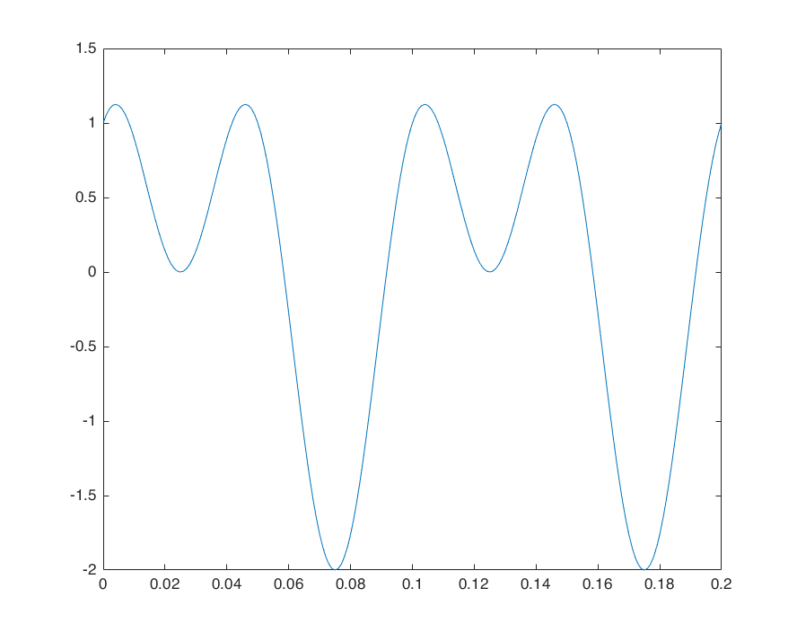

Contents
close all
clc
clear all
A. Sampling
f=10;
sr0 = 1000;
t=0:1/sr0:0.2;
y=sin(2*pi*f*t)+cos(4*pi*f*t);
plot(t,y)
y2=sawtooth(2*pi*f*t);
figure
plot(t,y2)
sr = 100;
dt = 1/sr;
t1=0:dt:0.2;
y3=resample(y,sr,sr0);
figure
plot(t1,y3)
y4=resample(y2,sr,sr0);
figure
plot(t1,y4)

B. Interpolation
B 1. Linear Interpolation
fc = 10000; Tc = inv(fc); t = 0:Tc:0.2;
y = sin(2*pi*10*t);
fs = 100; Ts = inv(fs); ts = 0:Ts:0.2;
ys2 = sin(2*pi*10*ts);
ys1 = interp1(t,y,ts,'linear');
figure
plot(t,y)
figure
plot(ts,ys2)
hold on
plot(ts,ys1)
legend('sin(2*pi*10*ts)','interp1(t,y,ts,linear)')
B 2. Sinc Interpolation
Fc = 1e4; Tc = 1/Fc;
t = 0:Tc:0.2;
f = 10;
x_cont = sin(2*pi*f*t);
for Fs = [2,5,10,20,40,60,80]
disp(Fs)
Ts = 1/Fs;
ratio = round(Ts/Tc);
t_sampled = t(1:ratio:end);
x_sampled = x_cont(1:ratio:end);
figure
plot(t, x_cont)
hold on
stem(t_sampled, x_sampled, 'o')
legend('Continuous time signal (f = 40 Hz)', ['Sampled signal Fs = ' int2str(Fs)])
sincTrain = zeros(length(t), length(x_sampled));
figure; grid on; hold on
plot(t, x_cont, 'k', 'LineWidth', 1)
xlabel('t'); ylabel('Amplitude')
title(['Fs = ' int2str(Fs) ' (f = ' int2str(f) ' Hz)'])
try
idx = 1;
for n = -floor(length(x_sampled)/2):floor(length(x_sampled)/2)
sincTrain(:, idx) = x_sampled(idx)*sinc((t - n*Ts)/Ts);
p = plot(t, sincTrain(:, idx));
stem(t_sampled(idx), x_sampled(idx))
idx = idx + 1;
pause(0.5);
end
catch
end
x_reconst = sum(sincTrain, 2);
err = (x_cont' - x_reconst).^2;
figure
hold on
grid on
plot(t, x_cont)
plot(t, x_reconst)
plot(t, err)
legend('x cont','x reconst','err')
end
2
5
10
20
40
60
80